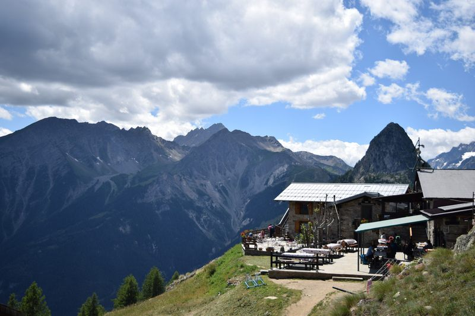
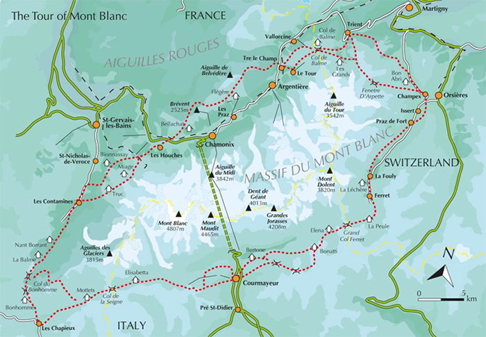
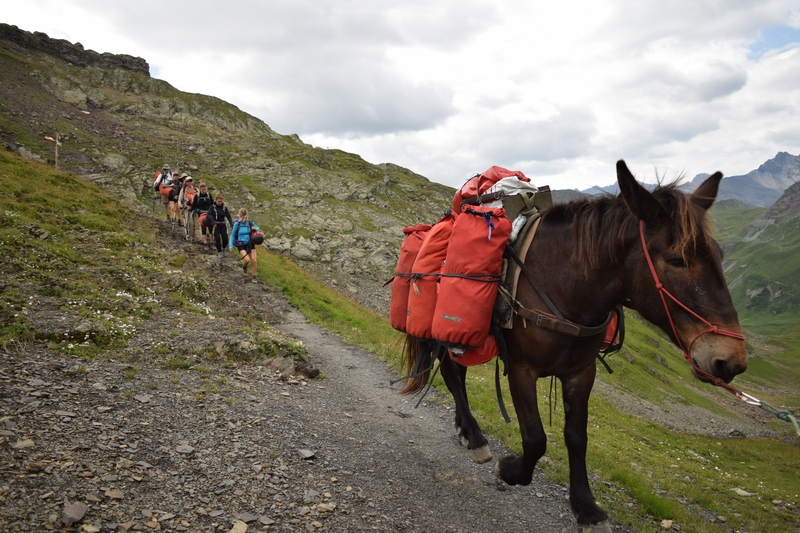

The first thing I did was buy “Tour of Mont Blanc: Complete Two-Way Trekking Guide” – a very comprehensive guide on the trail, accommodation, and interesting information. I used this as my sole information source for planning my trek. However, there is plenty of information available at tourist offices in the major cities you will start at and pass through. You will be especially interested in lists of accommodation available on the trail, and guide maps that offer more finer details and alternative trails for the trek. These should be available in tourist and guide offices in Les Houches and Chamonix, the two most common starting points for the trek. The tour book offered all the information I found I needed for the trek.
The two options you generally have on the trail are to either camp or stay at refuges/hotels. If one chooses to camp, there are certain restrictions on where you can camp. Most often, there will be signs informing you on which is the case. The people I met who chose this option mainly because it was far cheaper to camp than to pay for accommodation. The option to stay at refuges and hotels are the more common option – especially for older folk and families. I took the hotel/refuge option and will only comment on those.
Firstly, what are refuges? They’re hostel type accommodation that are scattered along the whole route between towns. If you choose to stay in hotels/refuges, you’ll be spending more nights in refuges than hotels. They often provide food and refreshments during the day and dinner, a bed, and breakfast for those staying the night (half-board or demi-pension in French). All refuges will have dormitory style rooms (sizes vary from 4 beds per room to 30+). Some will offer private rooms for couples/groups. Those tend to be more economical. Refuges are generally pretty nice with hospitable staff, decently comfortable beds, and good food. Note that if you wish to stay in a refuge, they usually ask that you bring a sleeping bag liner for hygiene (note that you can rent or purchase a disposable one at some refuges).
The main advantage of going the paid accommodation option is that you get to sit in a hall with a bunch of people and share communal meals – An awesome way to meet other hikers and have a great experience! Another advantage is the weight saved by not having to carry around your tent, sleeping bag, and food wherever you go (your knees will be a lot happier with you!). Some refuges will also be able to prepare a packed lunch for 5-10 euro per person – and it comes with a lot! Most will have a few showers with hot water as well.
Disadvantages mostly lie with the cost. Every night you’re paying anywhere between 40 to 70 euro a night for half-board per person, which can really add up! The other disadvantage is that during peak-season (mid July to late August), places are booked out pretty far in advance, so if you don’t prepare properly you can be without a place to stay! To avoid this, plan your route and book hotels and refuges a few weeks in advance. Note that Rev Reynolds’ book has phone numbers and email addresses for accommodation along the route.
I packed super light. I used an 18L pack (without pockets for bottles) with an additional camera bag. For reference, most people had 25-30L bags and some had extra bags that were being sent between towns! I didn’t pack any specialty hiking gear, so just imagine I was doing the hike dressed in what you would see people wear at the gym.
Here’s what I brought on the trip in my bag and some changes I would make to the pack:
Some things I would add:
Deciding on how long you want to take on your hike depends on a) your own travel time constraints, and b) how fit you are. The book offers up an 11-day route which is the one that I planned around. However, it is more than possible to do it in fewer than 11 days. Details of the route I took can be seen in my other TMB post.
If following the book exactly, you’ll spend about 5h hiking each day, covering an average of 17km. If you wish to lengthen your days to reduce the number of days, it only requires a bit of extra fiddling to change that up. Accommodation is generally only a couple hours from each other (super convenient!). Note also that new alternatives pop up that aren’t always found in the book!
Also note that there are plenty of guided tour options available online. They ensure that you have accommodation and have a guide. Some tours ferry bags from town to town, which seemed pretty convenient! I even saw a couple groups with a donkey that carried everyone’s bags!
